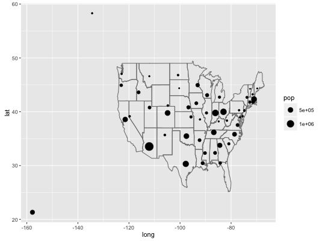

borders(database = "world", regions = ".", fill = NA, colour = "grey50", ...)
map for detailsgeom_polygonCreate a layer of map borders.
if (require("maps")) { ia <- map_data("county", "iowa") mid_range <- function(x) mean(range(x)) seats <- plyr::ddply(ia, "subregion", plyr::colwise(mid_range, c("lat", "long"))) ggplot(ia, aes(long, lat)) + geom_polygon(aes(group = group), fill = NA, colour = "grey60") + geom_text(aes(label = subregion), data = seats, size = 2, angle = 45) data(us.cities) capitals <- subset(us.cities, capital == 2) ggplot(capitals, aes(long, lat)) + borders("state") + geom_point(aes(size = pop)) + scale_size_area() }